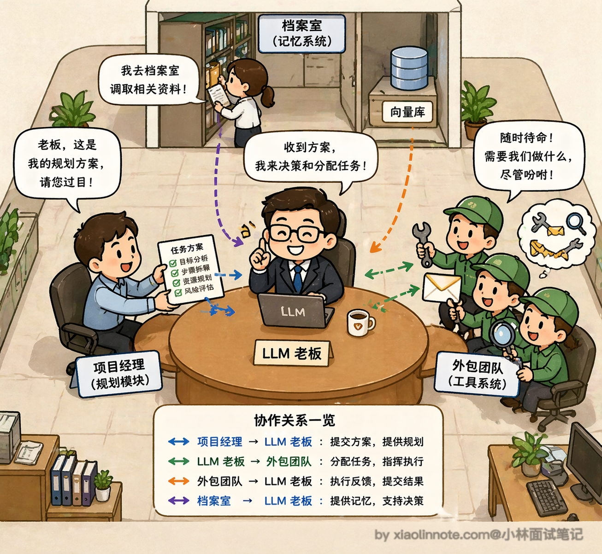
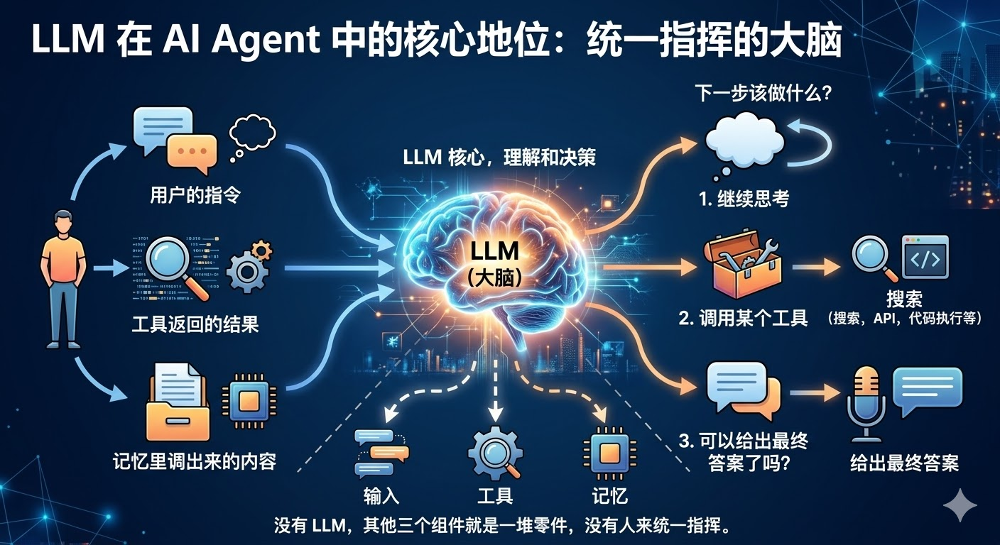
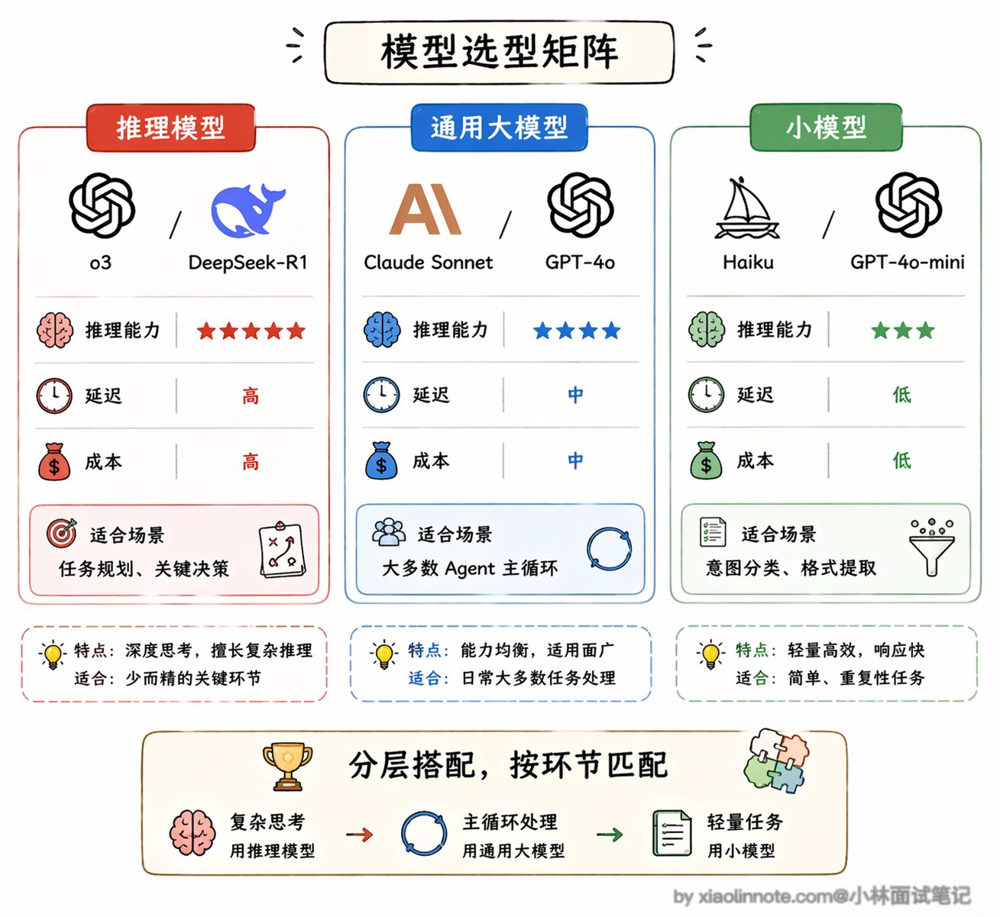
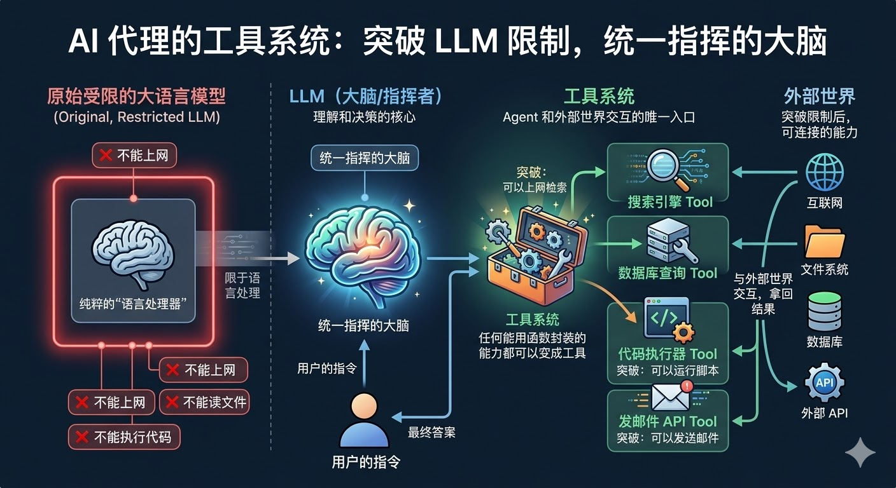
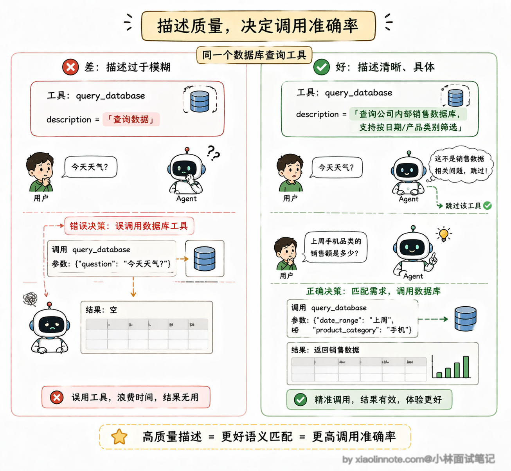
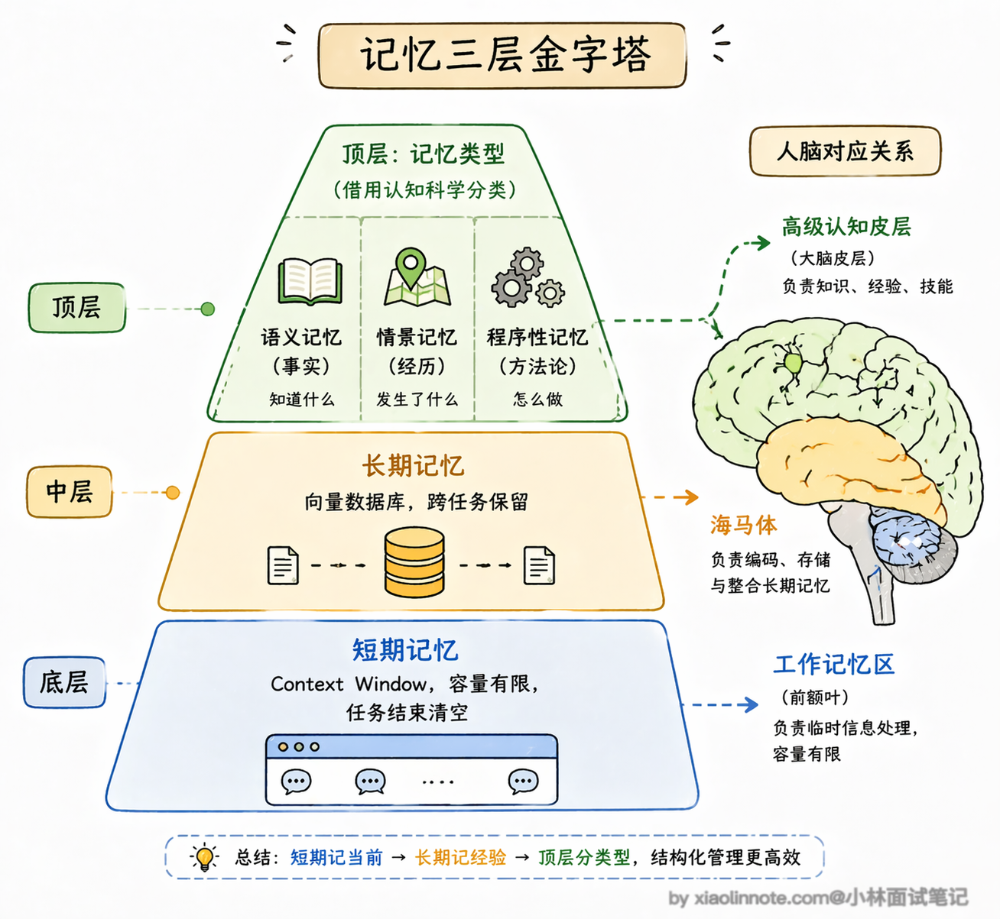
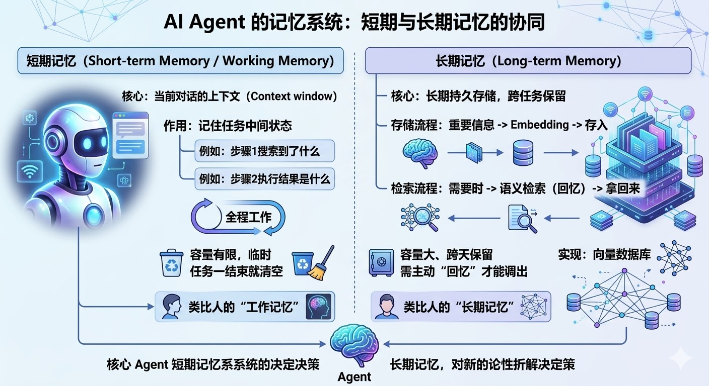
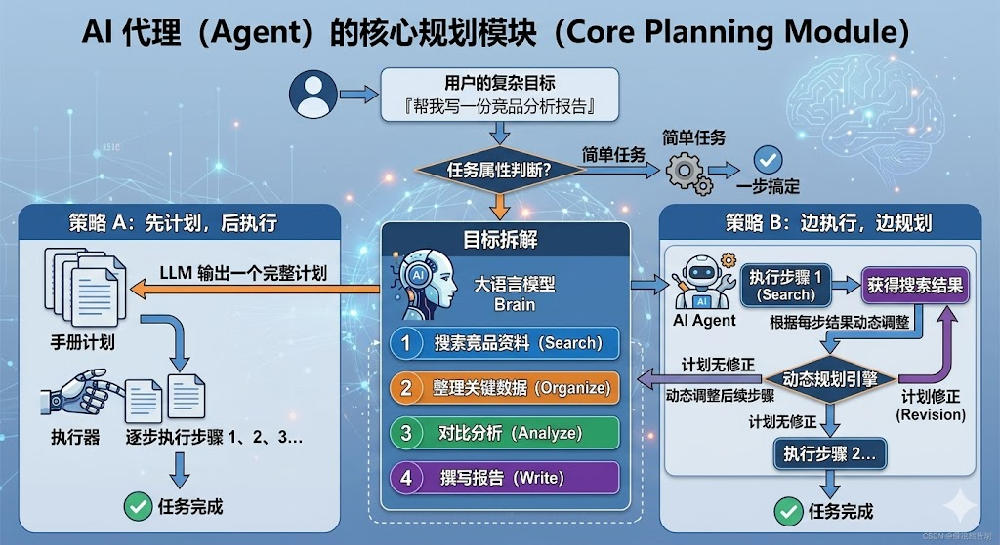
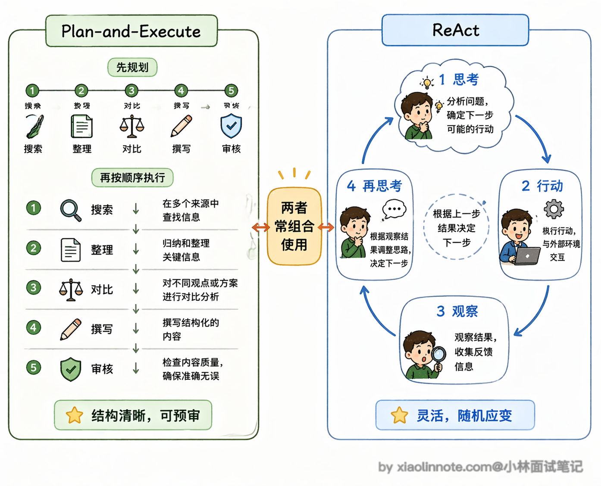
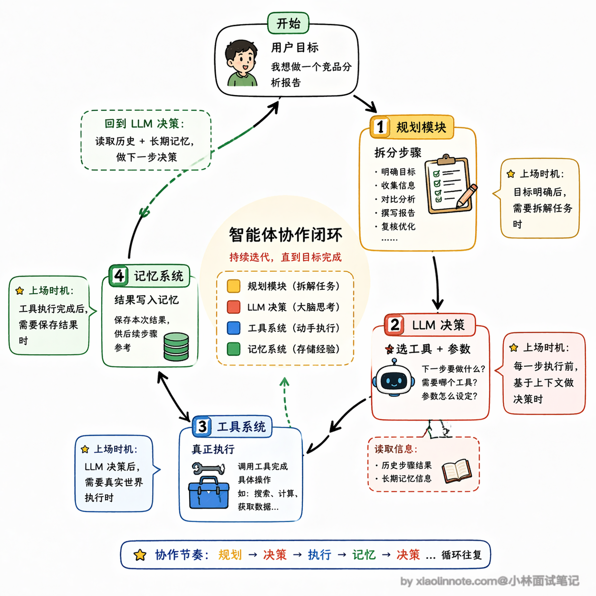

2. Agent 的基本架构由哪些核心组件构成？
👔面试官：Agent 架构里有哪些核心组件？
🙋♂️我：有 LLM 和工具系统，LLM 是大脑，工具让它能联网搜索、执行代码这些。
👔面试官：就两个？一个 Agent 跑起来，任务执行到一半它怎么知道之前做了什么？
🙋♂️我：哦，还有记忆，就是把上下文存进去，让它记得之前的步骤。
👔面试官：记忆就是上下文吗？长任务上下文放不下怎么办？记忆还分哪几种你知道吗？
🙋♂️我：这个……可能还有数据库存历史记录？
👔面试官：对，短期记忆放 context window，长期记忆用向量数据库存，两者不一样。还有一个组件你一直没提，复杂目标怎么拆解成步骤，靠谁？
好，咱来系统捋一下，Agent 的四个核心组件各自负责什么、为什么缺一不可。
💡 简要回答
我理解 Agent 的基本架构有四个核心组件：LLM、工具、记忆、规划模块。
LLM 是整个系统的大脑，负责理解任务和做决策；工具让 Agent 能跟外部世界交互，搜索、执行代码、调 API 都靠它；记忆让 Agent 在任务执行过程中保持状态，不会「失忆」；规划模块负责把复杂目标拆解成可执行的步骤。
这四个组合在一起，才让 Agent 具备了自主完成任务的能力。
📝 详细解析
理解了 Agent 是什么之后，我们来看它的内部结构，一个完整的 Agent 系统，到底由哪几个核心部件组成。
你可以把整个 Agent 系统类比成一家公司：LLM 是老板，所有决策都经过它拍板；工具系统是外包执行团队，老板说「去搜这个」「去发这封邮件」，他们负责真正干活；记忆系统是公司档案室，各种信息的存档和调档都靠它；规划模块是项目经理，拿到一个大目标后负责拆解成可执行的任务单。四个角色各司其职，才撑起了 Agent 的自主运行能力。

LLM 核心
先来说 LLM 核心。它是整个 Agent 的大脑，所有的输入，不管是用户的指令、工具返回的结果还是记忆里调出来的内容，最终都要经过 LLM 来理解和决策。它负责判断：下一步该做什么？是继续思考、调用某个工具、还是已经可以给出最终答案了？没有 LLM，其他三个组件就是一堆零件，没有人来统一指挥。

不过很多人忽略了一个重要的东西：System Prompt（系统提示词）。
你可以把它理解成给老板的「岗位说明书」，在 Agent 开始工作之前，System Prompt 就已经定义好了它的角色、行为边界、输出格式要求等等。
比如你做一个客服 Agent，System Prompt 里会写「你是一个专业的客服助手，只回答产品相关问题，遇到不确定的信息要说不知道，不要编造答案」。这段话看着简单，但它决定了 Agent 的「人格」和行为准则，写得好不好直接影响 Agent 的表现。实际工程里，System Prompt 的调优往往占了开发时间的相当大一部分，因为它是你能最直接控制 Agent 行为的手段。
另一个实际工程中非常重要的问题是：选哪个模型？
不同模型之间的差异远比你想象的大。首先是推理能力，Agent 需要做多步决策，模型的推理能力直接决定了它能不能正确拆解任务、选对工具。像 GPT-4o、Claude Sonnet 这类模型在复杂推理上的表现就比小模型好很多，但调用成本也更高。
这里还有一个趋势值得关注：专门为推理优化的模型越来越多了，比如 OpenAI 的 o1/o3 系列、DeepSeek-R1 这类推理模型（Reasoning Model），它们在做复杂任务拆解和多步决策时的表现会更好，特别适合做 Agent 的大脑。
但推理模型的代价是延迟更高、token 消耗更大，所以不是所有场景都适合用。一个常见的工程做法是：用推理能力强的大模型做核心决策（比如任务规划、关键判断），用更快更便宜的小模型做简单任务（比如意图分类、格式提取），根据不同环节的需求来搭配。
其次是工具调用的稳定性，有些模型生成的 JSON 格式经常出错、参数乱填，导致工具调用失败，这在生产环境里会带来大量的重试和 token 浪费。
最后是上下文窗口大小，Agent 每一步的工具返回结果都要塞进上下文，一个复杂任务跑十几步下来，上下文很容易就撑满了，如果模型的窗口太小，后面的步骤就「看不到」前面发生了什么。所以在实际项目里，模型选择不是一个「越贵越好」的问题，而是要根据任务复杂度、延迟要求、成本预算来做权衡。

工具系统
然后是 工具系统，这是 Agent 和外部世界交互的唯一入口。
LLM 本身是个纯粹的「语言处理器」，它不能上网、不能读文件、不能执行代码，但这些限制都可以通过工具来突破。工具可以是搜索引擎、数据库查询、代码执行器、发邮件的 API，任何你能用函数封装的能力都可以变成工具。

工具是怎么定义的？我给你看一个最标准的格式：
# 定义工具的结构（以 OpenAI function calling 格式为例）
# 你只需要告诉模型三件事：工具叫什么名、能做什么事、需要哪些参数
tools = [
{
"type": "function",
"function": {
"name": "search_web",
"description": "搜索互联网上的信息",
"parameters": {
"type": "object",
"properties": {
"query": {
"type": "string",
"description": "搜索关键词"
}
},
"required": ["query"]
}
}
}
]
# LLM 决定调用工具时，会返回类似这样的结构：
# {"tool_call": {"name": "search_web", "arguments": {"query": "2024年大模型最新进展"}}}
# 然后你的代码负责真正执行这个搜索，把结果再塞回给 LLM你看，工具定义里没有一行执行逻辑，只有「名字、描述、参数说明」。模型读了这份说明书，决定要调哪个工具、参数填什么，把决策以 JSON 格式告诉你，你的代码去真正执行，结果再反馈给模型。整个分工很清晰：模型负责「决定做什么」，程序负责「真正执行」。
这里还有一个非常容易被忽略的点：工具描述的质量直接影响 Agent 的表现。
模型是根据你写的 description 来判断「什么时候该用这个工具」的，如果描述写得含糊、有歧义，模型就可能在不该用的时候调了它，或者该用的时候没调。
举个例子，你有一个查数据库的工具，如果 description 只写了「查询数据」，模型可能在用户问天气的时候也去查数据库，因为「查询数据」太宽泛了。但如果你写成「查询公司内部销售数据库，支持按日期、产品类别筛选」，模型就能精确判断什么场景该用它。所以在实际开发中，工具描述其实是需要反复调优的，它的重要性不亚于 prompt 工程。

当工具越来越多的时候，管理和标准化就变成了一个大问题。
Anthropic 在 2024 年底提出了 MCP（Model Context Protocol，模型上下文协议），它底层是一套基于 JSON-RPC 的通信协议，不只是把「工具」标准化了，还定义了三类能力：Tools（会改变外部世界的操作，比如发邮件）、Resources（只读的数据源，比如文件内容）、Prompts（预定义的提示词模板，比如代码审查模板）。
MCP 的架构分三层：最外层是 Host，就是用户交互的 AI 应用（比如 Claude Desktop、Cursor）；中间是 Client，负责管理和 MCP Server 之间的连接；最里层是 Server，就是真正暴露这些能力的服务端。
工具提供方只要按 MCP 标准实现一个 Server，任何支持 MCP 的 Agent 都能自动发现和调用这些能力，不需要额外写适配代码。你可以把 MCP 理解成工具世界的「USB-C 接口」，只要插口标准一致，什么设备都能连上。
2025 年 12 月，Anthropic 把 MCP 捐给了 Linux 基金会旗下新成立的 Agentic AI Foundation，生态已经非常壮大，数千个公开 MCP Server 可用。
记忆系统
接下来是 记忆系统，它分几个层次，你可以类比人的记忆方式来理解。

最基础的是短期记忆，就是当前这轮对话的上下文，装在 context window 里。
Agent 在一次任务执行过程中靠它记住中间状态，比如第一步搜索到了什么、第二步执行结果是什么。这就像人的「工作记忆」，容量有限，任务一结束就清空了。
然后是长期记忆，通常用向量数据库来实现，把重要信息 embedding 之后存起来，下次用的时候做语义检索拿回来。
这就像人的「长期记忆」，容量大、可以跨天保留，但需要主动「回忆」才能调出来。
这里借用认知科学对人类长期记忆的分类来理解 Agent 长期记忆的组织方式（注意这只是便于理解的类比，Agent 系统里的实现通常都是向量检索 + metadata 过滤，不一定真的分这么细）：
- 语义记忆（Semantic Memory）存的是事实性知识，比如「用户是做金融行业的」「某个 API 的调用频率限制是每分钟 60 次」；
- 情景记忆（Episodic Memory）存的是具体的经历，比如「上次用户问退款问题时我们查了订单系统，发现他的订单已过退款期」；
- 还有一种是程序性记忆（Procedural Memory），存的是「怎么做事」的经验，比如「处理退款问题的标准流程是先查订单状态再核实支付方式」。程序性记忆特别有意思，它不是存某个具体的事实，而是把 Agent 做事的方法论沉淀下来，让它下次碰到类似任务时能直接套用高效的处理流程，而不是每次都从头摸索。

不过记忆系统在工程实践中有几个挑战是经常被忽视的。
短期记忆最大的问题是上下文窗口有限，一个复杂任务执行十几步，每步工具返回大量文本，上下文很快就满了，这时候你要么做摘要压缩（把前面的步骤浓缩成关键信息），要么做滑动窗口（只保留最近几步的详细内容），但不管哪种方式都会丢失信息，怎么在「记住够多」和「不撑爆上下文」之间取舍，是记忆工程里最核心的设计问题。
长期记忆的挑战则在于「什么该存、什么不该存」以及「存了之后怎么管理」。
如果什么都往向量数据库里塞，检索出来的噪音会很多，反而干扰模型的决策；如果存得太少，又失去了长期记忆的意义。目前比较好的做法是在存入之前做一轮重要性评估，只把真正有价值的信息持久化。另外还有一个容易忽略的机制叫记忆衰减（Memory Decay）。
你想想看，一个客服 Agent 三个月前处理的某个问题，到今天还重要吗？大概率已经不重要了。记忆衰减的做法是给每条记忆加一个时间权重，越久远的记忆权重越低，检索的时候自然就排在后面了。
具体实现上通常用一个指数衰减公式：记忆的相关性分数 = 语义相似度 x 时间衰减因子，时间衰减因子随着时间推移逐渐降低。衰减速度可以根据业务场景调整，比如客服场景衰减可以快一些（因为大多数对话是一次性的），而法律合规场景衰减就要慢得多（因为历史记录可能在很久之后还会被引用）。
这样 Agent 就不会被一堆过时的信息淹没，总是优先关注最近的、最相关的记忆。
规划模块
最后是 规划模块，它决定了 Agent 能不能应对复杂任务。
简单任务一步就搞定了，但如果你让 Agent「帮我写一份竞品分析报告」，它需要先把这个目标拆解：搜索竞品资料 -> 整理关键数据 -> 对比分析 -> 撰写报告。规划模块就是做这件事的。

规划模块的底层其实依赖的是 LLM 的推理能力，而提升推理能力有几种主要的技术手段。
最基础的是 CoT（Chain of Thought，思维链），它的核心思想是让模型「把思考过程写出来」，而不是直接输出最终答案。你可以在 prompt 里加一句「Let's think step by step」，模型就会把推理的中间步骤一步步展开。
为什么这么简单一句话就能提升效果？因为 LLM 的 token 生成是逐步进行的，每一步推理的输出会成为下一步推理的输入，把中间步骤写出来，等于给了模型更多的「思考空间」。
在此基础上还有 ToT（Tree of Thoughts，思维树），它不是走一条线性的推理链，而是在每个推理节点上展开多个可能的分支，然后评估每个分支的质量，选出最优的路径继续往下走。
你可以把 CoT 理解成「一条路走到底」，ToT 理解成「走到岔路口先看看几条路，选最好的那条再往前」。ToT 在需要创造性思考或者复杂决策的场景下效果更好，但计算成本也更高，因为它要同时评估多条路径。
有了这些推理技术打底，规划模块在实际运作中有两种主流模式。
- 第一种是「先规划后执行」，也就是 Plan-and-Execute 模式，先让 LLM 输出一个完整的步骤列表，然后按顺序逐步执行。好处是整体结构清晰，你能在执行前就看到完整计划，方便人工审核；缺点是如果中间某一步的结果和预期不一样，原来的计划可能就不合适了，需要重新调整。
- 第二种是「边执行边规划」，也就是 ReAct 模式，每走一步就根据当前结果重新思考下一步该做什么，不提前制定完整计划。好处是灵活性极高，能根据实际情况随时调整；缺点是容易「走偏」，因为每一步都是局部最优决策，有时候会忽略整体目标。在实际工程里，很多团队会把两种模式结合起来，先做一个粗略的计划确定大方向，执行过程中再根据反馈动态微调。

这四个组件合在一起，到底是怎么跑起来的？我用一段伪代码来还原整个运行过程，看完你就能理解它们是怎么协作的：
# Agent 运行的核心 loop（伪代码）
def agent_run(user_goal: str):
# 第一步：规划模块上场，把目标拆成步骤列表
plan = llm.plan(user_goal)
memory = [] # 短期记忆，用来存每一步的中间结果
for step in plan:
# 第二步：LLM 核心做决策，这一步该怎么做？
action = llm.decide(
step=step,
history=memory, # 把短期记忆传进去，让它知道之前做了什么
long_term=vector_db.search(step) # 从长期记忆里捞出相关历史
)
if action.type == "tool_call":
# 第三步：工具系统负责真正执行
result = tools.execute(action.tool_name, action.args)
memory.append({"step": step, "result": result}) # 执行结果存入短期记忆
elif action.type == "final_answer":
return action.content # LLM 判断任务完成，返回最终答案看完这段伪代码，你会发现 Agent 的核心节奏其实很简单：规划 -> 决策 -> 执行 -> 结果存入记忆 -> 再决策，循环往复，直到任务完成。LLM 始终是那个做决策的角色，工具系统是执行者，记忆系统让它不会「失忆」，规划模块帮它把大目标拆成小步骤。

LangChain、LlamaIndex、AutoGen 这些主流框架，本质上都是围绕这四个组件来设计的，只是封装方式和侧重点各有不同。
🎯 面试总结
开头对话里踩了三个雷，面试时都要注意避开。
第一个雷是漏掉组件，很多人只说 LLM 和工具两个，把记忆和规划模块忘了，但这两个恰恰是让 Agent 能跑复杂任务的关键。
第二个雷是对记忆的理解太浅，「记忆就是上下文」这个回答不完整，正确的说法是记忆分两层：短期记忆放在 context window 里，存当前任务的中间状态；长期记忆用向量数据库实现，能跨任务保存用户偏好和历史，两者机制和用途完全不同。
第三个雷是工具系统的分工理解有偏差，模型本身不执行工具，它只是输出「调哪个工具、传什么参数」的决策，真正执行是你的代码，这个「决策和执行分离」的设计是面试里很容易被追问的点。
答好这道题，能把四个组件和类比（LLM 是老板、工具是外包团队、记忆是档案室、规划是项目经理）结合起来说，会非常加分。
对了，AI Agent的面试题会在「公众号@小林面试笔记题」持续更新，林友们赶紧关注起来，别错过最新干货哦！